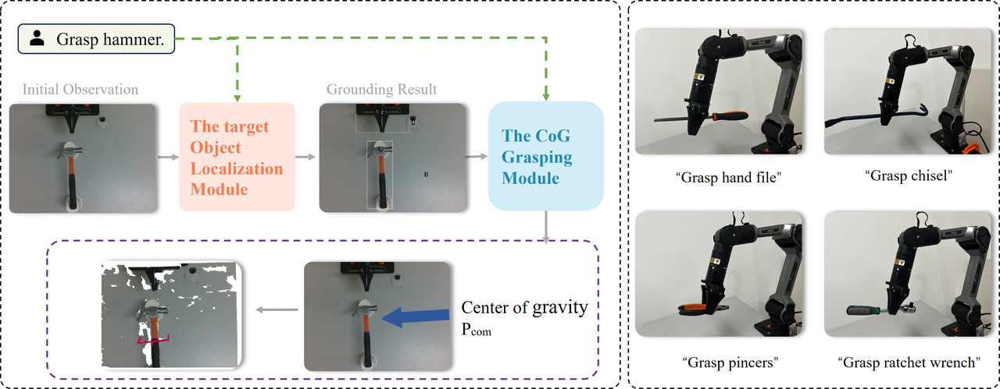

This study presents a grasping method for objects with uneven mass distribution by leveraging diffusion models to localize the center of gravity (CoG) on unknown objects. In robotic grasping, CoG deviation often leads to postural instability, where existing keypoint-based or affordance-driven methods exhibit limitations. We constructed a dataset of 790 images featuring unevenly distributed objects with keypoint annotations for CoG localization. A vision-driven framework based on foundation models was developed to achieve CoG-aware grasping. Experimental evaluations across real-world scenarios demonstrate that our method achieves a 49\% higher success rate compared to conventional keypoint-based approaches and an 11\% improvement over state-of-the-art affordance-driven methods. The system exhibits strong generalization with a 76\% CoG localization accuracy on unseen objects.This provides an innovative solution for precise and stable grasping tasks, with its scientific validity further validated in complex and dynamic scenarios.

Left: Given the instruction and current RGB-D images, the VLM first identifies the target object. It then generalizes the segmented image and maps the center of gravity to the current scene using the center-of-gravity module, selecting the nearest and highest-scoring grasp pose. Right: The image on the right shows the captured result in a real-world scenario, depicting the grasped objects: a rasp, crowbar, pliers, and ratchet wrench. The method described in this paper enables grasping of unseen objects without requiring additional training.
In the real world, we conducted experiments using the Piper robotic arm, with point cloud data acquired via the D435 scanner. We compiled an image dataset comprising 790 centre-of-gravity points. The dataset includes common household objects such as hammers, hand files, ratchet wrenches, screwdrivers, and pincers. We tested ten objects with uneven mass distributions in real-world settings, evaluating the model's performance in both complex and dynamic scenarios.